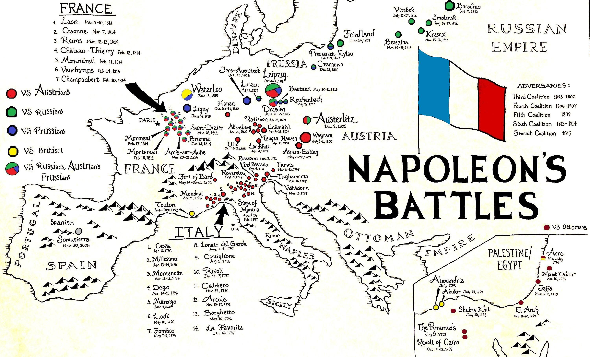
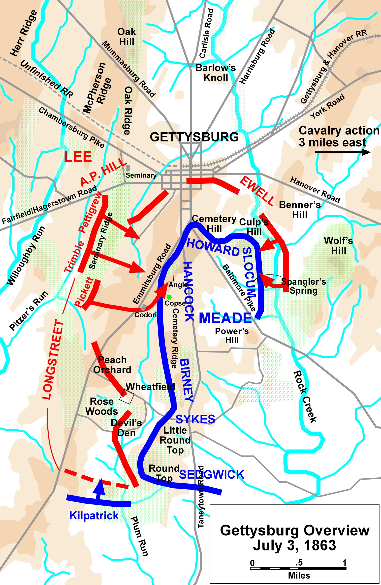
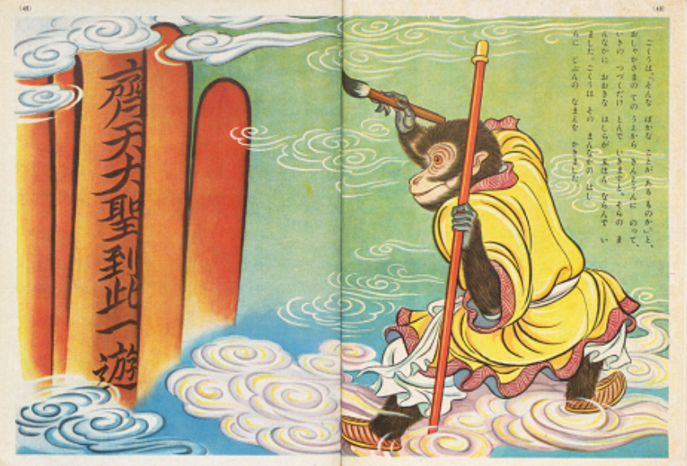
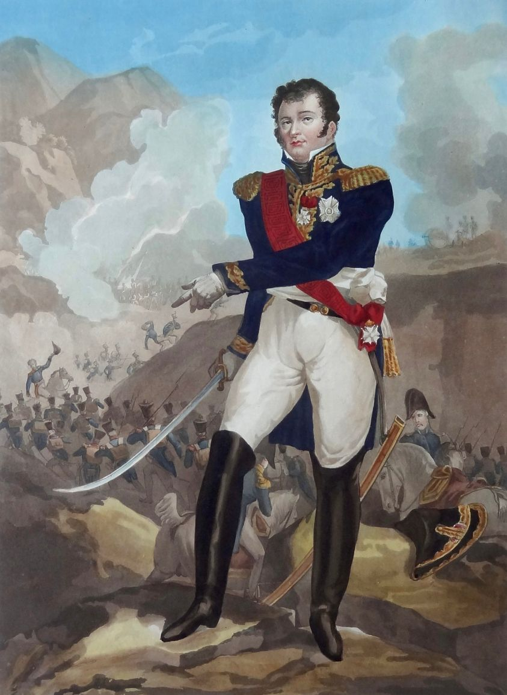

드레스덴 전투 에필로그 - 나폴레옹답지 않았던 싸움
게시: 2024-04-29T06:30:28+09:00
드레스덴 전투는 나폴레옹이 여태까지 거두었던 승리와는 다소 결이 다른 전투였습니다. 대표적인 부분이, 나폴레옹의 병력이 적군보다 훨씬 적었다는 점이었습니다. 흔히 알려진 바와는 달리, 나폴레옹은 적은 수로 다수의 적을 무찌르는 지휘관이 아니었습니다. 나폴레옹의 명성이 헛된 것이라는 소리가 아니라 그 반대로 나폴레옹은 그보다 훨씬 더 뛰어난 지휘관이라는 소리입니다. 나폴레옹은 전체 병력수가 적보다 더 적더라도, 언제나 어떻게든 전투 당일 현장에서는 적보다 더 많은 병력을 끌어 모았습니다. 당장 눈 앞의 적이 더 많을 경우엔 싸우지 않고 움직였고, 언제나 적보다 더 빨리 움직여 병력을 모았습니다. 그러나 이번에는 반대로, 20만에 달하는 적군에 대해 첫날은 고작 7만, 둘쨋날에도 12만 정도의 병력만 가지고 혈투를 벌였습니다. 이는 드레스덴 전투가 과거 나폴레옹의 주요 전투와는 달리 방어전이라는 특성에 기인합니다. 드레스덴은 교통 및 보급 문제 때문에라도 어떻게든 꼭 지켜야 했던 곳이었기 때문에, 나폴레옹은 불리한 상황에서도 전투를 강요받은 셈이었습니다. 이건 결코 나폴레옹이 선호하는 전투 상황이 아니었습니다. 그런데도 싸웠다는 것은 이제 나폴레옹이 과거와는 달리 궁지에 몰린 상황이라는 반증이었습니다.

(나폴레옹의 주요 전투들을 표시한 지도들입니다. 나폴레옹은 언제나 공세를 취하는 편이었는데, 이건 결코 그가 피에 굶주린 악마이기 때문이 아니었습니다. 오히려 그는 전쟁을 가급적 피하는 편이었는데, 대부분의 전쟁은 적국이 선전포고를 하며 시작되었습니다. 그럼에도 그는 방어할 때도 앉아서 기다리지 않고 언제나 적을 찾아나서서 공격에 나섰는데, 그게 훨씬 유리했기 때문이었습니다. 심지어 절대적으로 불리한 상황에서 벌어진 1797년 아르콜레 다리에서의 혈투도, 나폴레옹이 공격에 나서면서 시작된 전투입니다. 나폴레옹이 수비측이었다는 점에서, 드레스덴 전투는 정말 희귀한 사례라고 할 수 있습니다.) 그런 상황에조차 나폴레옹은 대승을 거두었습니다. 언제나 전투 결과에 대해서는 불분명한 점이 많지만, 대략 보헤미아 방면군은 3만8천의 사상자와 포로를 냈고 40문의 대포를 잃은 것이 비해, 그랑다르메는 고작 1만 정도의 사상자를 냈습니다. 28일 전투에서 오스트리아군으로 구성되었던 보헤미아 방면군의 좌익을 철저하게 짓밟은 뮈라가 나폴레옹에게 보고한 내용은 매우 쿨한 것이었습니다. "폐하의 기병대가 포로 1만5천과 함께 12문의 대포, 그리고 12개의 군기를 노획했는데, 포로 중에는 중장 하나와 소장 둘이 포함되어 있고, 기타 영관급 장교들 및 그 이하 계급의 장교들이 매우 많습니다." 이렇게 불리한 상황에서도 대승을 거둔 것은 나폴레옹이 장비나 관우 같은 용맹을 갖춘 수퍼맨이라서가 아니었습니다. 여태까지 보셨겠습니다만 나폴레옹이 드레스덴 전투에서 개인적으로 뭔가 엄청난 활약을 보여준 부분은 없었고, 남들이 생각하지 못한 제갈공명급의 신기묘산을 보여준 것도 없었습니다. 그저 급한 대로 병력 10만을 추가로 끌고 와서 더 많은 적군과 운명을 걸고 싸웠다는 것 뿐이었습니다. 그런데 대체 나폴레옹은 어떻게 이길 수 있었던 것일까요? 핵심은 역시나 내선이동(interior lines movement)이었습니다. 애초에 나폴레옹이 휴전 종료 이후 러시아-프로이센-오스트리아-스웨덴의 4국 연합에 대해 맞서기 위해 그린 큰 그림이 내선이동의 장점을 최대한 살린다는 것이었습니다. 드레스덴을 중심으로 집결한 그랑다르메의 숫자가 더 적다고 할지라도, 남-동-북쪽으로 크게 분산된 연합군의 위치에 비해 그랑다르메는 내선 위치에 있기 때문에 어디에서 전투가 벌어지든 적군보다 더 짧은 거리를 이동해도 손쉽게 병력을 집중시킬 수 있었습니다.

(한국전쟁에서의 낙동강 전선, 미국 남북전쟁에서의 게티스버그 전투 등이 모두 내선이동의 이점을 잘 살린 사례라고 할 수 있습니다.) 드레스덴 전투는 딱 그 축소판이었습니다. 슈바르첸베르크와 알렉산드르 중에서 대체 누가 총사령관인지 불분명했던 보헤미아 방면군은 일단 대규모 병력만 끌고 왔을 뿐, 그걸 신속하게 집중시켜 공격할 생각은 하지 않고 그저 드레스덴을 중심에 놓고 크게 반원을 그린 상태로 시간을 끌었습니다. 나폴레옹은 그렇게 자연스럽게 형성된 내선을 적극 활용했고, 덕분에 더 적은 병력으로도 효율적인 방어전을 펼칠 수 있었습니다. 압도적인 병력 차이로 인해 전투 도중 보루 한 두개가 함락되기도 했으나, 나폴레옹은 그 지점에 신속히 예비 병력을 투입하여 구멍을 틀어막았습니다. 이 모든 것이 내선이동의 장점이었습니다. 반대로 외선 이동을 해야 했던 보헤미아 방면군은 좌익 끝부분과 우익 끝부분의 거리가 멀었을 뿐만 아니라, 좌익에는 오스트리아군을, 우익에는 프로이센군을 배치하는 등 국적별 분리 배치를 택함으로써 좌우익 간에 협동 작전이 어려운 상황을 자초했습니다. 게다가 좌익의 오스트리아군은 바이서리츠 지류로 인해 아예 물리적으로 분단이 되다 보니 스스로 각개격파를 당한 꼴이 되었지요. 이건 지형지물을 전혀 볼 줄 모르는 사람들이 지휘관으로 있었던 군대의 필연적 결과였습니다. 그렇다면 드레스덴 전투가 사실상 나폴레옹의 승전 중 전술적으로 가장 빛나는 승리라는 일부 평가는 근거 없는 소리에 불과할까요? 아닙니다. 원래 명장은 초인적 무력을 발휘하거나 신기묘산을 짜내는 사람이 아니라, 그런 것 없이도 승리를 낚아챌 수 있도록 환경을 만들어내는 사람입니다. 기억하시겠지만 드레스덴 전투 자체가 '만약 연합군이 드레스덴을 습격한다면 이렇게 하겠다'라는 나폴레옹의 큰 그림에 연합군이 놀아난 것입니다. 도중에 벌어진 모든 과정이 나폴레옹이 예측하고 의도한 방향대로 일어난 것은 아니었고 아슬아슬한 순간도 많았지만, 결국 슈바르첸베르크와 알렉산드르는 나폴레옹 손바닥 위에서 나대는 손오공 신세에 불과했습니다.

(부처님 손가락이 세상의 끝에 있는 기둥이라고 생각하고는 '제천대성이 여기 왔다 간다'라며 사인을 남기는 손오공) 이렇게 정리하니 마치 나폴레옹이 드레스덴 전투에서 아무런 회심의 한방을 보여주지 못한 것처럼 읽힙니다. 실은 나폴레옹이 준비한 회심의 한방이 있었습니다. 전에 언급했듯이 나폴레옹은 드레스덴에 입성하기 하루 전까지도 드레스덴이 아니라 피르나로 가려고 했었습니다. 드레스덴 방어는 그냥 생시르의 제14군단에게 맡겨두고, 자신은 드레스덴을 포위한 보헤미아 방면군의 퇴로를 끊어 아예 여기서 끝장을 보려고 했던 것입니다. 그러나 드레스덴 방어 태세가 탄탄하지 않다는 평가에다 결정적으로 그로스베런(Großbeeren)에서 우디노가 패배했다는 소식이 당도하면서 지나친 욕심을 버리고 결국 드레스덴으로 향하게 되었던 것입니다. 하지만 나폴레옹은 대단한 야심가였으며, 그저 드레스덴 구원에 만족할 사람이 아니었습니다. 그는 보헤미아 방면군을 완전히 궤멸시켜 이 전쟁을 여기서 끝내버리겠다는 생각을 완전히 버리지 않았습니다. 그는 원래 드레스덴에 연합군이 기습을 해오면 동원할 목적으로 큰 펀치 하나를 근처인 지타우(Zittau)에 준비해 두었는데, 바로 방담의 제1군단이었습니다. 당시 다른 군단들의 규모는 작게는 1만2천, 크게는 4만 수준이었는데, 방담의 제1군단은 무려 3만5천으로 매우 큰 규모에 해당했습니다. 이런 규모의 군단을 거느리는 것은 다부나 네 정도의 고참 원수들뿐이었습니다. 나폴레옹은 병력이 크게 부족한 상황에서도 이런 알짜 군단을 드레스덴으로 소집하지 않았고, 피르나로 보냈습니다. 드레스덴에서 패배할 경우 보헤미아로 후퇴해 되돌아갈 것이 분명했던 보헤미아 방면군의 퇴로를 끊을 목적이었습니다. 실제로 29일 아침, 보헤미아 방면군이 남쪽으로 후퇴한 것을 확인하자 나폴레옹은 즉각 추격에 나서 피르나 인근까지 당도했으나, 앞에서 언급했듯이 폭우를 맞으며 싸운 탓으로 급격히 건강이 악화되어 드레스덴으로 되돌아가야 했습니다. 그럼에도 나폴레옹은 생시르의 제14군단과 마르몽의 제6군단을 보내 계속 그 뒤를 추격하게 했습니다. 그런데, 27일 오후 피르나를 점령했던 방담의 제1군단은 29일엔 어디로 갔던 것일까요?

(방담(Dominique Vandamme)입니다. 나폴레옹의 부하들 중에서도 터프가이로 유명했던 그의 직계 후손으로 장 끌로드 반담이 있습니다. (아닙니다)) Source : The Life of Napoleon Bonaparte, by William Milligan Sloane Napoleon and the Struggle for Germany, by Leggiere, Michael V With Napoleon's Guns by Colonel Jean-Nicolas-Auguste Noël https://www.reddit.com/r/dancarlin/comments/139zlxx/map_of_the_napoleon_battles_around_europe_under/ https://www.reddit.com/r/AskHistorians/comments/2dw8oz/can_someone_explain_interior_lines_to_me/ https://journeytothewestresearch.com/2018/09/06/the-monkey-king-and-graffiti/ https://www.instagram.com/p/C2saD3ASHRL/